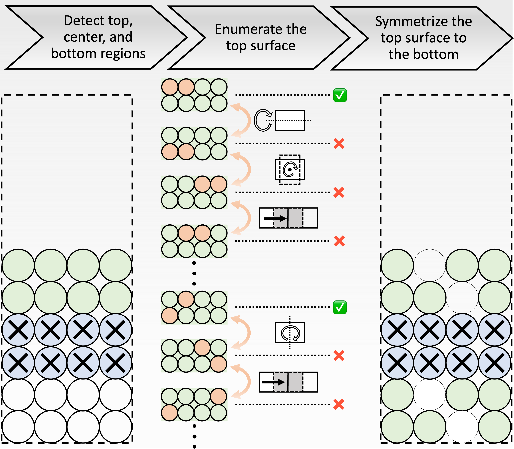

Introduction
Overview
The surface degradation of layered transition metal (TM) oxide and other related cathode compositions have been characterized extensively in experiments, however how the reactions take place on the cathode surface and the surface reconstructions form on the atomic scale is still lacking. The surface phase diagram as a function of the state of charge and the temperature can offer insights into atomic-scale processes that are challenging to probe experimentally.

To construct the surface phase diagram, slab models with different surface compositions need to be created. The surface phase diagram shown on the left only has four phases that are predicted to be stable in the range of 0 to 5 V and 0 to 1500 K. However, behind the most stable phases shown on the surface phase diagram, hundreds/thousands meta-stable phases should also be calculated. The figure shown above on the right illustrates how the three-dimensional surface phase diagram looks like when “all” enumerated slab models are considered.
This package takes use of the method developed in enumlib code, but in contrast to conventional enumlib code, we apply the systematic enumeration to only part of the slab model, creating Li and O vacancies on the surface. Then by taking the advantage of inherent inversion symmetry center of the slab models, the top surface will be symmetrized to the bottom surface, i.e. a symmetrically equivalent modification was introduced at the bottom of the slab models. The below flowchart shows the framework of the surface enumeration.
{kind=link}
Architecture
The surface-pd package consists of the following 5 sub-packages:
analysissub-package includes analysis modules to analyze and check the input and output slab models.coresub-package includes core modules to build and enumerate the slab models.errorsub-package includes error modules defined by developer to guide users.plotsub-package includes plot modules to construct the 3D surface phase diagrams.utilsub-package includes util modules to define some utility functions.